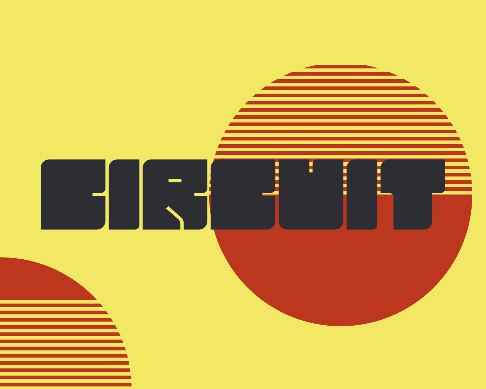
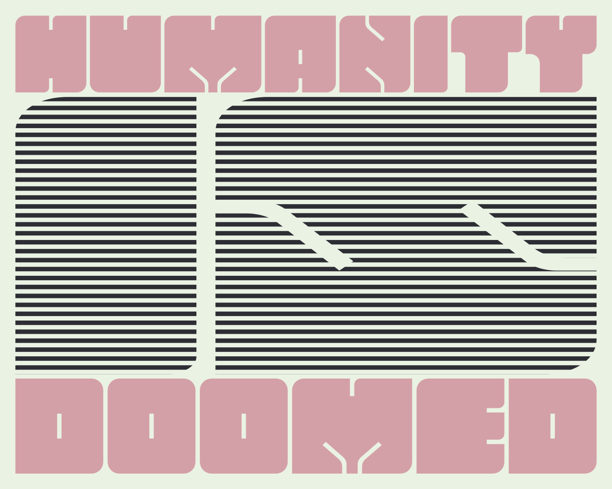

Circuit is a display-typeface designed by chip in 2025. The goal with this typeface was to create a font with as few shapes and complications as possible. Most of the characters consist of just squares with two rounded corners and two non-rounded. There are no major holes or dents, just simple cuts into the square. This makes for a font that fits perfectly in a grid-based system.
Circuit © 2025 by Chip is licensed under Creative Commons Attribution-NoDerivatives 4.0 International.
41

